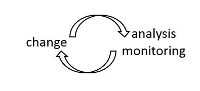
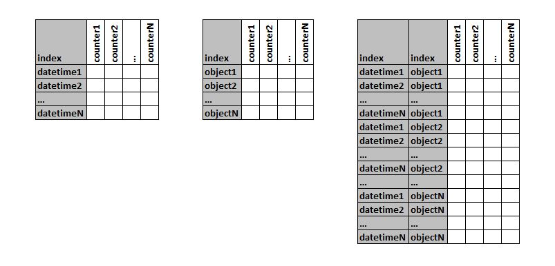
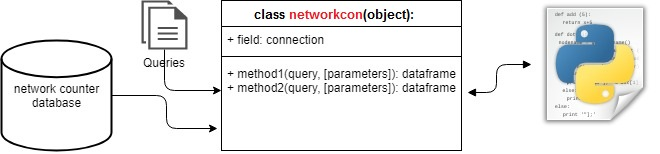
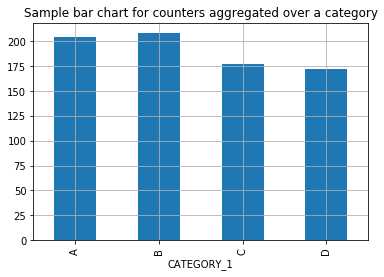
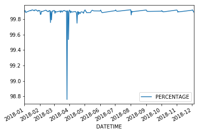
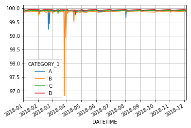
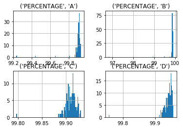
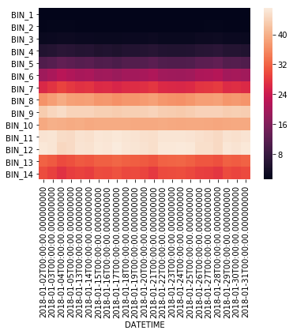
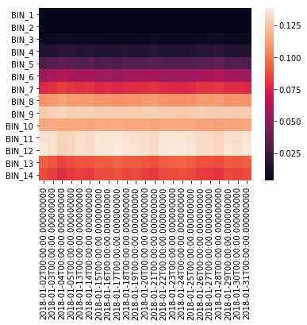
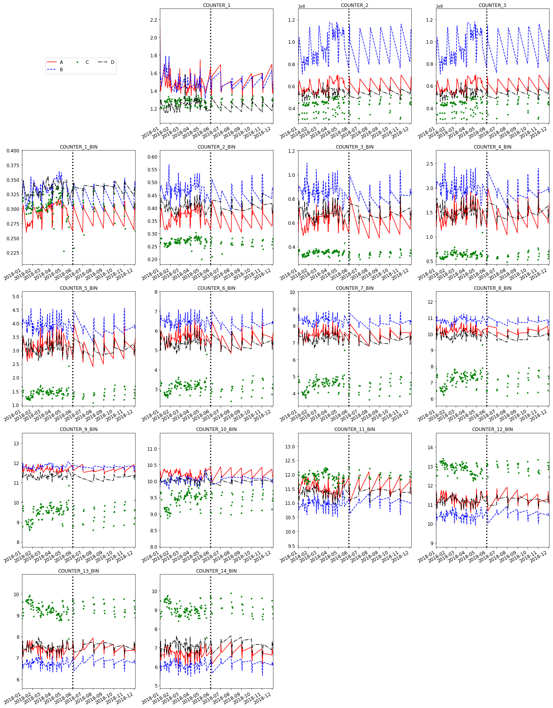

Standard network optimization tasks include, in most general way, an infinite loop of changes and analysis tasks. Changes in network consists of but is not limited to several parameter changes. A huge amount of know-how is required in changes part and this branch itself is a separate professional field.

Assuming the technical reasoning and the purpose of a change is known, next step is always monitoring/analyzing related KPIs.
And this is what this notebook is all about...
What this document includes is definitions, best practices, tips for a Python powered framework for Network Data Analysis that increases the detail level of and speeds up the above mentioned loop.
What this document does not include is any specific mobile network technology, vendor specific KPI definition and/or counter name.
Potential target audience includes (but is not limited to) any network engineer/data analyst or similar technical personnel who is interested in flexible, resizable and custom methods of analysis and monitoring of network performance indicators.
Prerequisites to follow this document are
It is possible to separate the task of analysis into following major parts.
Before going into technical detail, I would like to emphasize that this part assumes the reader has already a moderate and/or better knowledge of the concept of counter for mobile networks.
What separates network performance data that consist of network component counters from any other generic source of data is the fact that network counters already define a very specific type of source structure.
In most basic way, counter is an incremental data value that increments (and may reset) in case of a specific occurrence that is detected by a network component.
This gives us an advantage especially while writing queries. Every, if not all,
counter is to be aggregated over a dimension of interest. The traditional design
of tables and incremental origin of creating data makes this aggregation nothing
but a simple SUM.
It must be noted here that, there are different types of incremental counters like ACC, PEG, GAUGE and PDF. The 1st 3 are similar and will be handled different only when it is necessary. I will mention PDFs below in a bit more detail, as bin structure need special attention.
Dimension of interest over which aggregation is to be done can be, minute, hour, day, a geographic region etc. These dimensions are very critical while defining a framework that will work on each and every possible counter, in each and every possible level of aggregation.
An experienced data analyst may already have figured out that, aggregation only via SUM may have serious disadvantages while comparing and/or numerically evaluating data after aggregation and he/she is right. The fact is, although in daily life it may be enough to look at accumulated values of counters to understand if something is wrong, if we want to compare we need to normalize the data. This is again possible thanks to the traditional design of counter based data storage. To be more clear, as I tried to stress up to here, we are dealing with a very well defined source. We will come to this normalization process in more detail in later.
For now, let's continue with the 3rd possible aggregation method, which is nothing but an extension of incremental counters, namely PDFs.
Putting mathematical details aside, PDFs are group of dependent counters, each of which correspond to a bin, that spans the possible range of that counters or interest. Although it is called PDF the sum of all bins will not be equal to one. This may or may not be important depending on what we need to look at.
The hardest thing about PDF counters is that, every bin corresponds to an interval of usually numerical value, but the names will not be referring to these ranges most of the time. This challenge will be more clear once we try to plot them.
Because of all the rule of thumbs mentioned below, we will be able to write almost all of our queries according to the pseudo-query below:
SELECT CATEGORY,DATETIME,SUM(COUNTER1) AS COUNTER1,PERCENT(SUM(COUNTER2),SUM(COUNTER3)) AS PERCENTAGESUM(PDF_COUNTER_1) AS COUNTER_BIN_1,SUM(PDF_COUNTER_2) AS COUNTER_BIN_2,...SUM(PDF_COUNTERN) AS COUNTER_BIN_NFROM COUNTER_TABLE
That is, we may have
Note that actual queries will be much more complex than the pseudo-query above, probably joining several tables. But it will always be possible to keep the same logic no matter how many counters we have. This generic structure will be our basis on writing a Python library to be able to fetch data always in well-defined format.
A general rule of thumb would be:
Do anything which cannot be done using the above structure, in Python.
It is highly probable that the counters will be kept in an Oracle environment. And from here starts the Pythons magic. I will not go details of how to connect a Oracle database, because it is already done with perfect detail here and you may also want to look here.
It is a well known fact that Python is not usually about classes and all, but once it comes to keeping things clean, I could not think of a better solution than writing a connection class that will take into account all the structure I described above and use SQL queries under the hood.
Here I assume that the reader already is familiar pandas and major concepts of object oriented programming.
So we create a class as follows, which will make our life easier in Python:

Note that multi-index from 2 object type and or datetime type (also interger etc.) is also possible as long as proper methods are implemented. Unstacking method will behave same, datetime object is just a special case of x-axis as timeline. To keep the class implementation simple, I will only use the combinations above
Now, having defined the structure above, we can write a class that will have methods capable of providing data from a network counter database that will strictly obey the datadrame structure above.

import osimport sqlite3 #import cx_Oracleimport pandas as pdfrom . import log"""List of functions to call queries of specific type from relative path'query_path'. Note that most of the queries to be used by functions belowmust have specific type of input paramteres and output columns.i.e.it must be made sure that a query returns at least the row that is expectedin index column"""con = None# queries_folder is the name of the folder wrt this class where we keep queries# that are to be executed by functions of this classqueries_folder = 'queries'# def __init__(self, conn_string):"""Oracle or similar dbs may need connection string"""self.dbname = dbname # self.conn_string = conn_stringself.query_path = os.pathself.con = sqlite3# self.con = cx_Oracle.connect(self.conn_string, encoding='UTF-16', nencoding='UTF-16')loglogif self.con:self.conlogelse:log"""simply read queries"""logwith as query:return query"""returns a dataframe in its most basic form"""return pd"""returns a dataframe with optional parameters for query and indexcolumns. This is the most generic way of running a query and get resultin a dataframe"""return pdreturn pdreturn pdreturn pd
Following is an explanatory demonstration of concepts mentioned above.
We start by importing our helper class and usual pandas and matplotlib libraries.
from networklib import networkconimport pandas as pdimport matplotlib as plt%matplotlib inline
Let's instantiate a networkcon object that will make it easier to connect, disconnect to our database and to run queries under the hood.
nw = networkconnw
2018-05-29 18:29:14.852019 - C:\Users\tcerdkoc\AppData\Local\Continuum\anaconda3\networklib\networkcon.py - conected to db...2018-05-29 18:29:14.852019 - C:\Users\tcerdkoc\AppData\Local\Continuum\anaconda3\networklib\networkcon.py - fetching queries from C:\Users\tcerdkoc\AppData\Local\Continuum\anaconda3\networklib\queries
After nw object is connected we can use it to run either predefined methods or custom queries.
Let's aggegate over a category with some filter over a counter
nw
2018-05-29 18:29:16.585989 - networkcon - running C:\Users\tcerdkoc\AppData\Local\Continuum\anaconda3\networklib\queries\query_cat.sql
| SUM_COUNTER_1 | PERCENTAGE | |
|---|---|---|
| CATEGORY_1 | ||
| A | 204.3820 | 0.998965 |
| B | 208.3688 | 0.998398 |
| C | 177.1129 | 0.999090 |
| D | 171.8613 | 0.999400 |
get_cat() method has a default query to run.
...
We can overload it by a different query if we are sure that it returns a dataframe of similar structure. Here "query_cat2.sql" must return an index as "CATEGORY_1" or of course we can overload it with another index column name.
nw
2018-05-29 18:29:21.257398 - networkcon - running C:\Users\tcerdkoc\AppData\Local\Continuum\anaconda3\networklib\queries\query_cat2.sql
| SUM_COUNTER_1 | SUM_COUNTER_2 | PERCENTAGE | |
|---|---|---|---|
| CATEGORY_1 | |||
| A | 204.3820 | 8162979137 | 0.998965 |
| B | 208.3688 | 13076532225 | 0.998398 |
| C | 177.1129 | 5898861779 | 0.999090 |
| D | 171.8613 | 7457922487 | 0.999400 |
This simple structure makes a one-liner plot possible.
nw.SUM_COUNTER_1
2018-05-29 18:29:24.398943 - networkcon - running C:\Users\tcerdkoc\AppData\Local\Continuum\anaconda3\networklib\queries\query_cat2.sql<matplotlib.axes._subplots.AxesSubplot at 0x377111c7b8>

get_dtime() function is exactly the same, the only difference being the index column type datetime.
Datetime indexes are very useful especially while plotting. Most of the time matplotlib takes care of all cosmetic issues that arise once we swith between hours, dates, minutes etc.
Let's plot a trend chart of a percentage KPI we calculated with a one-liner. A simple co-operation between our "nw" object and matplotlib. Nice and easy ;)
nw
2018-05-29 18:29:27.696261 - networkcon - running C:\Users\tcerdkoc\AppData\Local\Continuum\anaconda3\networklib\queries\query_dtim.sql<matplotlib.axes._subplots.AxesSubplot at 0x37699645f8>

Up to here we plotted only one dimensional data or a better naming would be single series in chart nomenclature. In real life most of the time it will be necessary to compare KPIs of different categories like, regions, cities, vendors etc.
Below example uses a multi-index of one string and one datetime index as multi-index. Extension to string-string, datetime-datetime etc. is the same.
nw
2018-05-29 18:29:30.117585 - networkcon - running C:\Users\tcerdkoc\AppData\Local\Continuum\anaconda3\networklib\queries\query_dtim_cat.sql
| PERCENTAGE | ||
|---|---|---|
| DATETIME | CATEGORY_1 | |
| 2018-01-01 | A | 99.861563 |
| B | 99.857438 | |
| C | 99.921194 | |
| D | 99.948912 | |
| 2018-01-02 | A | 99.915452 |
| B | 99.890788 | |
| C | 99.912085 | |
| D | 99.946661 | |
| 2018-01-03 | A | 99.902305 |
| B | 99.872498 |
And some more one-liner plots directly from a database thanks to pandas
nw.PERCENTAGE
2018-05-29 18:29:34.491885 - networkcon - running C:\Users\tcerdkoc\AppData\Local\Continuum\anaconda3\networklib\queries\query_dtim_cat.sql<matplotlib.axes._subplots.AxesSubplot at 0x37716895f8>

nw
2018-05-29 18:29:35.820061 - networkcon - running C:\Users\tcerdkoc\AppData\Local\Continuum\anaconda3\networklib\queries\query_dtim_cat.sqlarray([[<matplotlib.axes._subplots.AxesSubplot object at 0x00000037716E5630>,<matplotlib.axes._subplots.AxesSubplot object at 0x00000037727C7240>],[<matplotlib.axes._subplots.AxesSubplot object at 0x0000003772801208>,<matplotlib.axes._subplots.AxesSubplot object at 0x0000003772838748>]], dtype=object)

Up to here I wanted to keep it as simple as possbile, and I will try to avoid any unnecessary imports as possible.
Nevertheless, once we start to think about PDF counters using multiple related columns, matplotlib alone has some drawbacks.
At this point seaborn turns out to be extremely useful and fits with our predefined dataframe structure. Let's import it and plot some PDF counters
import seaborn as sns
Although in real life you will probably have multiple PDF counters, whether to fetch them via differnet queries or use a bigger query and later slice the dataframe accourdingly is a desgin issue.
I personally prefer to minimize the number of different queries to use, which leads to relatively big dataframes in terms of number of columns and then slice them using pandas.
However, here I prefer not to go into pandas very much and use simple dataframes, because this document is about the final dataframe format arising from network counters.
So, lets use our get_dtime() function, overloading it with a query which we know fetches columns of a PDF counter. Namely COUNTER_1_BIN, COUNTER_2_BIN, ....COUNTER_24_BIN.
Here note how we aggregate over CATEGORY implicitly by only grouping by DATETIME. This query structure is very important when generating an interface that will work with any counter and any number of categories.
SELECTDATETIME,SUM(COUNTER_1_BIN) BIN_1,SUM(COUNTER_2_BIN) BIN_2,...SUM(COUNTER_14_BIN) BIN_14FROM counter_tableWHERE DATETIME > :FILTER_1 and DATETIME < :FILTER_2GROUP BY DATETIMEGROUP BY DATETIME
Note: in Oracle you would need to convert FILTER_i to datetime but sqlite is more forgiving in this example.
nw
2018-05-29 18:29:55.508215 - networkcon - running C:\Users\tcerdkoc\AppData\Local\Continuum\anaconda3\networklib\queries\query_dtim_PDF.sql
| BIN_1 | BIN_2 | BIN_3 | BIN_4 | BIN_5 | BIN_6 | BIN_7 | BIN_8 | BIN_9 | BIN_10 | BIN_11 | BIN_12 | BIN_13 | BIN_14 | |
|---|---|---|---|---|---|---|---|---|---|---|---|---|---|---|
| DATETIME | ||||||||||||||
| 2018-11-02 | 1.2212 | 1.5602 | 2.7508 | 6.2572 | 12.5664 | 21.6398 | 28.3640 | 38.6049 | 44.4309 | 39.4607 | 45.3551 | 45.2151 | 30.4632 | 27.7333 |
| 2018-11-03 | 1.2973 | 1.6960 | 3.0305 | 6.9418 | 13.6984 | 22.9668 | 29.6155 | 39.5817 | 44.8586 | 39.3401 | 44.5767 | 44.2597 | 29.4191 | 26.7184 |
| 2018-11-04 | 1.3339 | 1.5658 | 2.5729 | 5.6798 | 11.8245 | 20.9493 | 27.9589 | 38.3960 | 44.3081 | 39.7510 | 45.4724 | 45.3177 | 30.6566 | 28.7990 |
| 2018-11-05 | 1.2405 | 1.4836 | 2.5128 | 5.5876 | 11.6370 | 20.8317 | 27.7975 | 38.4541 | 44.7036 | 40.0806 | 45.7171 | 45.6160 | 30.8924 | 28.8789 |
and some seaborn magic
sns
2018-05-29 18:29:57.750699 - networkcon - running C:\Users\tcerdkoc\AppData\Local\Continuum\anaconda3\networklib\queries\query_dtim_PDF.sql<matplotlib.axes._subplots.AxesSubplot at 0x37737c0780>

Note that we are working with counters. This means we cannot guarantee that the total number of samples are going to be equal in each consecutive day. i.e. it may be possible that consideranbly less samples are counted for example due a to an outage for a specigic day.
The plot above considers all the samples regardless of the day while applying the colormap. So, changes in accumulated values will be reflected to colormap, but for a PDF counter distribution is more interesting. So, we can either plot heatmap for each day (or any other groping we need for that matter.) or normalize the daily distributions.
By the time i am writing this document I made a quick search but could not find an already implemented density option for such a task. So let's do it ourselves.
a = nwa
2018-05-29 18:30:01.368051 - networkcon - running C:\Users\tcerdkoc\AppData\Local\Continuum\anaconda3\networklib\queries\query_dtim_PDF.sql
| BIN_1 | BIN_2 | BIN_3 | BIN_4 | BIN_5 | BIN_6 | BIN_7 | BIN_8 | BIN_9 | BIN_10 | BIN_11 | BIN_12 | BIN_13 | BIN_14 | |
|---|---|---|---|---|---|---|---|---|---|---|---|---|---|---|
| DATETIME | ||||||||||||||
| 2018-01-02 | 1.2441 | 1.4441 | 2.3692 | 5.2029 | 10.8144 | 19.4554 | 26.2021 | 36.8370 | 43.2765 | 39.2345 | 46.1698 | 46.6596 | 31.8450 | 29.9905 |
| 2018-01-03 | 1.2739 | 1.5237 | 2.5053 | 5.4858 | 11.4113 | 20.3898 | 27.4278 | 38.1068 | 44.4214 | 40.0457 | 46.2910 | 46.2647 | 31.2941 | 28.8495 |
| 2018-01-04 | 1.2961 | 1.5897 | 2.7452 | 6.2229 | 12.6521 | 22.0283 | 29.1295 | 39.4892 | 45.1238 | 39.7824 | 45.1239 | 44.6968 | 29.7608 | 27.2583 |
| 2018-01-05 | 1.3220 | 1.5906 | 2.7213 | 6.0547 | 12.2778 | 21.2294 | 27.9137 | 38.1440 | 44.1328 | 39.4681 | 45.0354 | 45.0458 | 30.3847 | 28.5410 |
| 2018-01-13 | 1.1732 | 1.4371 | 2.4348 | 5.5399 | 11.4177 | 20.3147 | 27.3183 | 38.0090 | 44.2084 | 39.5689 | 46.0092 | 46.0990 | 31.2259 | 28.9933 |
b=pdfor index, row in a:#normalise each row= row/rowsns
<matplotlib.axes._subplots.AxesSubplot at 0x3773820978>

Up to now, we only plotted one counter or CDF counters which are related into one chart. In real life almost always, it will be necessary to plot several counters at once.
If the number of counters is less than 10 or so, standard subplot methods are straightforward. Since this document is not a 1000th tutorial of how to use subplot in matplotlib, I leave it to the reader.
But... A challange would be the case that you want to check 50 or more counters at once. Below is a function that filters numerical columns and treats each column as a seperate counter and plots them into a NxM matrix layout.
Note that in practical cases where we want to analyse > 50 charts it is best practice to switch of matplotlib and save figure into a pdf or any other preferred format. Here number of columns we will get from our databse is relatively low, and we can plot it onto screen. Note als that we treat PDF counters as if they are independent counters for sake of demonstration.
import datetime as dtimport numpy as npimport matplotlib.pyplot as pltfrom math import ceil'''given a dataframe df with a minimum 1 numerical column and amulttinedex of size 2, this function plots one index in x axis andunstacks the other one.pdate: datetime to plot a vertical line on x axis if desiredy_axis_limit_factor: (0,1) avoids y axis to be set to a maxvalue in trends for better visualisationnr_columns: this determines how many graphs in parallel will beplotted in one row. number of rows depend on this and total columnsto be plotted'''try:pdate_dt = dt.datetimeexcept ValueError:pdate_dt = Falseprint(" warning: could not parse " + pdate + " as datetime...")# get numerical columns and remove possible duplicatesnf = dfnf = nf.loc# initialize before loopi = 0pos =fig = plt# column is just string column names (not array, list or sth similar)for column in nf:# +1 is because we shift at start to make place for legend and this may# cause an extra columnax = figaxaxax.axesif pdate_dt:ax# scale limits of y avis for better view# Nans are possible so we trytry:if != :pltexcept ValueError:pass# note 1 is empty for legend space and it starts from 2if == 2:if styles is None:else:axelse: # rest does not have legendif styles is None:else:i+=1figplt
b = nwb
2018-05-29 18:32:19.149397 - networkcon - running C:\Users\tcerdkoc\AppData\Local\Continuum\anaconda3\networklib\queries\query_dtim_cat2.sql
| CATEGORY_2 | COUNTER_1 | COUNTER_2 | COUNTER_3 | COUNTER_1_BIN | COUNTER_2_BIN | COUNTER_3_BIN | COUNTER_4_BIN | COUNTER_5_BIN | COUNTER_6_BIN | COUNTER_7_BIN | COUNTER_8_BIN | COUNTER_9_BIN | COUNTER_10_BIN | COUNTER_11_BIN | COUNTER_12_BIN | COUNTER_13_BIN | COUNTER_14_BIN | ||
|---|---|---|---|---|---|---|---|---|---|---|---|---|---|---|---|---|---|---|---|
| DATETIME | CATEGORY_1 | ||||||||||||||||||
| 2018-01-01 | A | CITY | 2.1081 | 56614730 | 56536354 | 0.2562 | 0.3804 | 0.7494 | 1.9666 | 4.0884 | 6.9107 | 8.9036 | 11.4679 | 12.2877 | 10.1451 | 10.9939 | 10.1746 | 6.4098 | 5.5859 |
| B | CITY | 1.9915 | 75222071 | 75114833 | 0.3028 | 0.4896 | 1.0243 | 2.5180 | 4.6992 | 7.2737 | 9.1088 | 11.3955 | 11.9904 | 9.7863 | 10.4912 | 9.7576 | 6.1860 | 5.3808 | |
| C | COUNTY | 1.2802 | 29515491 | 29492231 | 0.2792 | 0.2619 | 0.3635 | 0.7455 | 1.6659 | 3.4236 | 5.0247 | 7.8422 | 10.0256 | 9.6774 | 11.8198 | 12.4929 | 8.8653 | 8.5460 | |
| D | COUNTY | 1.1836 | 45953960 | 45930483 | 0.3134 | 0.4522 | 0.8595 | 2.0406 | 3.9261 | 6.3128 | 8.1736 | 10.6351 | 11.6110 | 9.8389 | 10.9120 | 10.4569 | 6.8157 | 6.1777 | |
| 2018-01-02 | A | CITY | 1.4316 | 57560043 | 57511377 | 0.2784 | 0.3241 | 0.5221 | 1.2015 | 2.7053 | 5.1010 | 7.0307 | 9.9341 | 11.5694 | 10.3053 | 11.9214 | 11.6910 | 7.7411 | 7.0728 |
Let's plot every numerical column and format the lines as we please

This part need special effort and I am working on it. For programmers, who know what to do but needs a starting point, following are good places